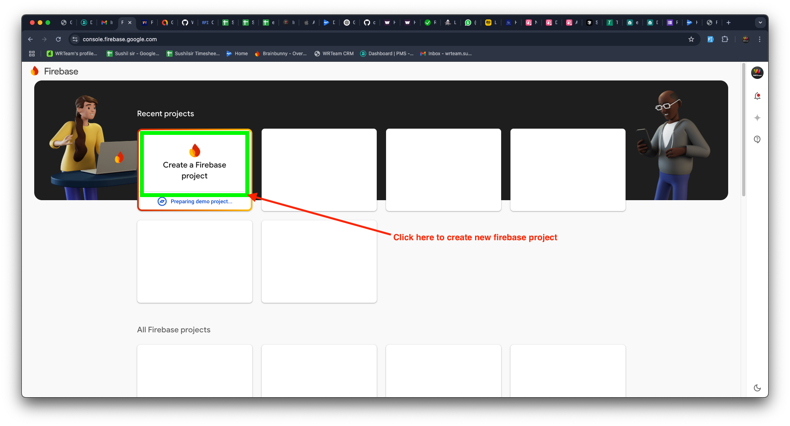
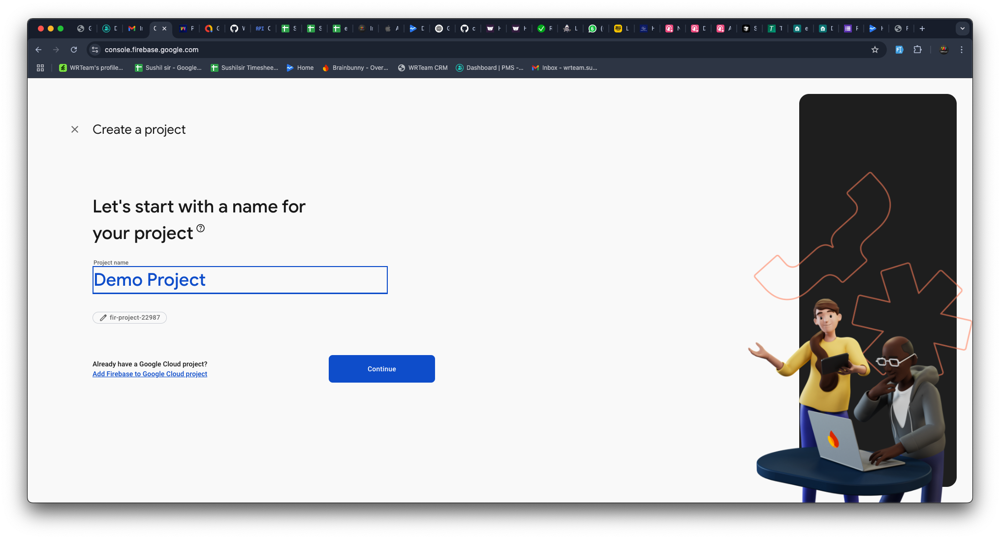
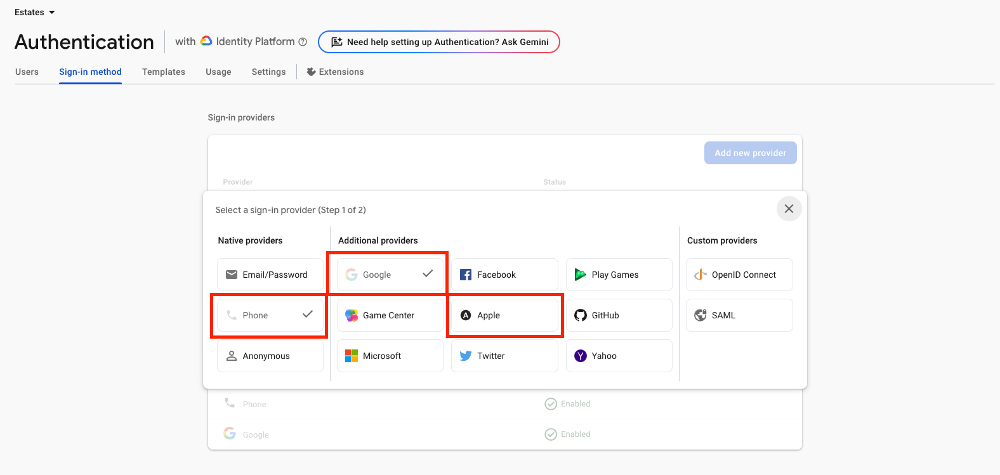
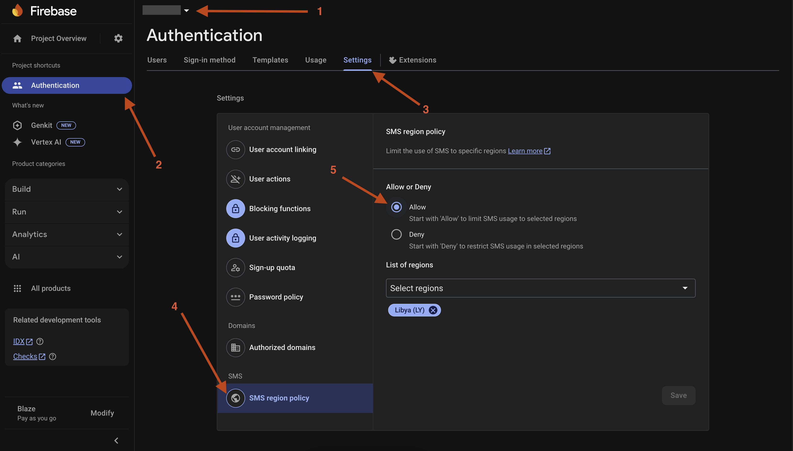
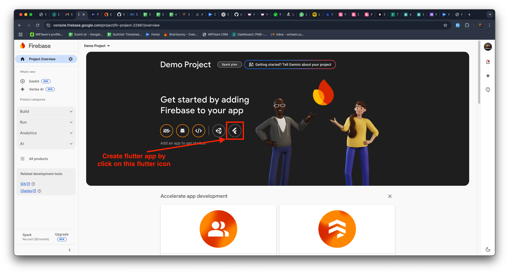
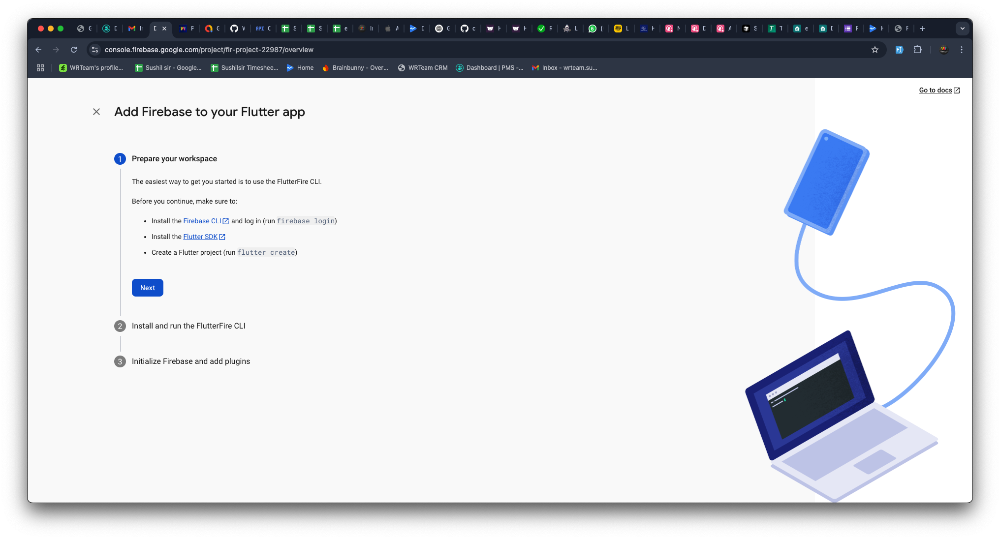

Firebase Setup
The app uses Firebase for push notifications, authentication, and other Google services.
Caution
Use the same Firebase project across Admin Panel, Web Portal, Customer App, and Delivery Boy App for unified authentication and push notifications.
1. Install Firebase CLI
Before creating a Firebase app from Flutter, install the Firebase CLI:
- Install Node.js (v18+) if not already installed.
- Install Firebase CLI globally:
Or follow the official Firebase CLI installation guide for platform-specific options.npm install -g firebase-tools
2. Create a Firebase Project
- Open the Firebase Console and click Create a Firebase project.

- Enter your project name (e.g.
SnapBuy) and press Continue.

- Press Continue on the next screen (Gemini AI assistance — optional, enabled by default).
- Click Create Project and wait for setup to complete.
- Once done, press Continue into the project dashboard.
3. Enable Firebase Authentication
Enable Authentication Methods
- In Firebase Console, select your project.
- Go to Authentication → Sign-in method.
- Click Add New Provider and enable the sign-in methods you need (e.g. Apple, Phone, Google).

Note
To enable mobile phone authentication, you must upgrade your Firebase plan from Spark to Blaze — see Firebase Billing Setup.
Enable SMS Authentication for Specific Regions
- Go to Authentication → Settings.
- Open the SMS region policy section.
- Click Allow.
- Add the regions where you want to enable SMS authentication for OTP login.

4. Create a Firebase App for Flutter
- On the project overview page, click the Flutter icon under "Add an app to get started".

- Press Next to continue through the wizard.
5. Log In to Firebase via Terminal
- Open a terminal in your IDE (VS Code, Android Studio, etc.).
- Run:
firebase login

- A browser window opens — log in with your Firebase account.
- If prompted to allow Firebase to collect CLI usage data, answer as you prefer and press Enter.
6. Run Firebase Initialization Commands
Activate the FlutterFire CLI and run configure to register the app:
dart pub global activate flutterfire_cli
flutterfire configure --project=<your-firebase-project-id>Select android and ios platforms when prompted, then confirm with Enter (and Y if asked again). This auto-generates lib/firebase_options.dart and downloads google-services.json / GoogleService-Info.plist into the correct folders.
Note
Change your package name in the app code first (see Change Package Name), then run the above command. Running it before changing the package name registers the app under the old/default package name.
7. Add SHA-1 & SHA-256 Keys (Android)
Android requires three pairs of SHA-1 and SHA-256 keys registered in Firebase Console > Project Settings > General > your Android app.
Debug Build
- Open your project in a terminal.
- Run, from the project root:
# Mac / Linux cd android ./gradlew signingReport # Windows cd android gradlew signingReport - Copy the SHA1 and SHA256 values from the output.
- In Firebase Console, go to Project Settings → General → Android App and add the copied keys.
Release Build
- Generate a keystore file:
You'll be prompted to set a password (characters won't be visible) and optional details you can skip with Enter.# Mac / Linux keytool -genkey -v -keystore YOUR-KEYSTORE-FILE.jks -keyalg RSA -keysize 2048 -validity 10000 -alias YOUR-ALIAS # Windows keytool -genkey -v -keystore YOUR-KEYSTORE-FILE.jks -storetype JKS -keyalg RSA -keysize 2048 -validity 10000 -alias YOUR-ALIAS - Create a file named
key.propertiesin your project'sandroid/folder with:storePassword=[your-password-from-previous-step] keyPassword=[your-password-from-previous-step] keyAlias=[your-alias-from-previous-step] storeFile=[your-keystore-file-location] - Retrieve the release SHA keys:
Enter the keystore password when prompted.keytool -list -v -keystore "YOUR_KEYSTORE_FILE_PATH" -alias YOUR_ALIAS_NAME - Copy the SHA1 and SHA256 values into Firebase Console as above.
Warning
Do not skip adding these keys — without them, authentication will not work for your app once it's in production.
App Signing Key
- After creating the app on Google Play Console, open the app and go to Test and release → Setup → App Signing.
- Copy the SHA1 and SHA256 keys from the App signing key certificate and add them to Firebase Console.
8. iOS Authentication Setup
- Open
ios/Runner.xcworkspacein Xcode. - Go to Signing & Capabilities.
- Add the Sign In With Apple capability.
- Select a Team in the Code Signing section.
Configure URL Schemes
- Select the Info tab under your project settings.
- Expand URL Types.
- Click + and add a new URL scheme.
- Find
REVERSED_CLIENT_IDinsideGoogleService-Info.plistand paste it into the URL Schemes field. - In Firebase Console, go to Project Settings → Apple apps and copy the Encoded App ID.
- Click + again and add another URL scheme, pasting the Encoded App ID into the URL Schemes field.
9. Download Config Files & Place in Project
Even if you used the FlutterFire CLI, verify that the Firebase config files are present in the correct locations. If they are missing or you prefer to add them manually, follow the steps below.
Android — google-services.json
- Open Firebase Console and select your project.
- Go to Project Settings (gear icon) → General tab.
- Scroll down to Your apps → select your Android app.
- Click Download google-services.json.
Place the downloaded file at:
android/app/google-services.jsoniOS — GoogleService-Info.plist
- In the same Project Settings → General tab, select your iOS app.
- Click Download GoogleService-Info.plist.
- Place the downloaded file at:
ios/Runner/GoogleService-Info.plistWarning
Both files must be placed at the exact paths above. Incorrect placement will cause Firebase to fail silently at runtime.
10. Update firebase_options.dart
The FlutterFire CLI auto-generates lib/firebase_options.dart when you run flutterfire configure. However, if you set up Firebase manually or need to update the values, open the file and fill in the required fields.
File location:
lib/firebase_options.dartThe file contains two platform configurations — one for Android and one for iOS. All values can be found in Firebase Console → Project Settings → General → Your apps.
static const FirebaseOptions android = FirebaseOptions(
apiKey: 'YOUR_ANDROID_API_KEY',
appId: 'YOUR_ANDROID_APP_ID',
messagingSenderId: 'YOUR_MESSAGING_SENDER_ID',
projectId: 'YOUR_PROJECT_ID',
storageBucket: 'YOUR_PROJECT_ID.appspot.com',
);
static const FirebaseOptions ios = FirebaseOptions(
apiKey: 'YOUR_IOS_API_KEY',
appId: 'YOUR_IOS_APP_ID',
messagingSenderId: 'YOUR_MESSAGING_SENDER_ID',
projectId: 'YOUR_PROJECT_ID',
storageBucket: 'YOUR_PROJECT_ID.appspot.com',
iosClientId: 'YOUR_IOS_CLIENT_ID',
iosBundleId: 'YOUR_IOS_BUNDLE_ID',
);| Field | Where to find it |
|---|---|
apiKey | Project Settings → General → app-specific key in firebase json file |
appId | Project Settings → General → App specific ID |
messagingSenderId | Project Settings → General → Cloud Messaging Sender ID |
projectId | Project Settings → General → Project ID |
storageBucket | storage_bucket key's value in firebase json file |
iosClientId | Inside GoogleService-Info.plist → CLIENT_ID field |
iosBundleId | Your app's iOS bundle identifier |
Warning
Never commit firebase_options.dart with real API keys to a public repository. Add it to .gitignore or use environment-based configuration.
Tip
Do not skip the SHA-key steps for Android or the URL scheme steps for iOS — Google Sign-In and Apple Sign-In will silently fail without them.